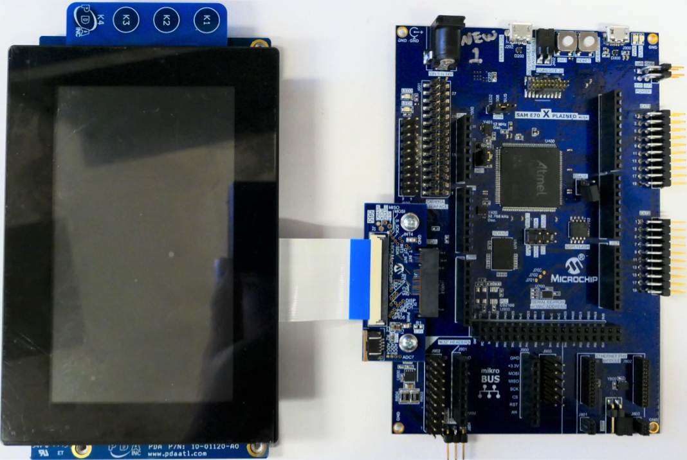

The application continuously uses the graphics library to render text, fill areas, and draw images to the screen. Once a layer is completely rendered to, the graphics library increments a layer swap counter. The application periodically (at 1 second intervals) samples the layer swap counter and calculates the difference from the previous sample. This difference is shown as the Frame Update Rate (Hz).
The block diagrams below show the various software and hardware blocks used in this application:
This configuration runs on the SAM E70 Xplained Ultra board an RGB565 GFX interface card and 4.3” WQVGA display. The Legato graphics library draws the updated sections of the frame to an internal scratch buffer. The scratch buffer is copied to the main frame buffer which is used to refresh the display thru the low-cost controller-less (LCC) driver.
User touch input on the display panel is received thru the PCAP capacitive touch controller, which sends a notification to the Touch Input Driver. The Touch Input Driver reads the touch information over I2C and sends the touch event to the Graphics Library thru the Input System Service.
• Legato Graphics Library
• Low Cost Controller-less (LCC) display driver
• Time system service, timer-counter peripheral library and driver
• 16-bit RGB565 color depth support (65535 unique colors)
• SMC peripheral and driver
• I2C and touch controller driver
• RAW, RAW RLE images

The Project Graph diagram shows the Harmony components that are included in this application. Lines between components are drawn to satisfy components that depend on a capability that another component provides.
Adding the “SAM E70 Xplained Ultra BSP” and “Legato Graphics w/ PDA TM4301B Display” Graphics Template component into the project graph will automatically add the components needed for an Aria graphics project and resolve their dependencies. It will also configure the pins needed to drive the external peripherals like the display. To customize this project to use Legato, the Legato Graphics Library, GFX Core and LCC Display Driver components were removed in the project graph and replaced by the Legato Graphics Library and LE (Legato) LCC Display driver. The connections of the components are shown in the project graph diagram below.
The parent directory for this application is gfx_apps/legato_benchmark. To build this application, use MPLABX to open the gfx_apps/legato_benchmark/firmware/legato_bm_e70_xu_tm4301b.X project file.
The following table lists configuration properties:
|
Project Name |
BSP Used |
Graphics Template Used |
Description |
|
legato_bm_e70_xu_tm4301b.X |
SAM E70 Xplained Ultra BSP |
Legato Graphics w/ PDA TM4301b Display (custom changes) |
SAM E70 Xplained Ultra with 4.3” WQVGA display thru LCC |
Note: This application may contain custom code that is marked by the comments "// START OF CUSTOM CODE ..." and "// END OF CUSTOM CODE". If you use the MPLAB Harmony Configurator to regenerate the application code, do not remove or replace the custom code.
This section describes how to configure the supported hardware.
Connect the display to the SAM E70 Xplained Ultra board via the RGB565 GFX interface board as shown below:

This section provides information on how to run and use the application.
On start-up, the application will display a splash screen.
After the splash-screen completes, the String Update benchmark screen is shown. In this screen, a counter is incremented at every application cycle. The screen demonstrates the rate at which the graphics library renders a string on the screen. This involves a fill operation that clears the background, lookup of the glyphs from the string library, and the drawing of the glyphs on the frame buffer.

The “Frame Update (Hz)” field shows the current or instantaneous rate at which the graphics library updates the label widget that shows the counter value. Touching the Frame Update value switches between the current value (curr) and the average (avg) value across 10 samples.
Touching the “+” and “-“ buttons increases and decreases the size of the string, respectively.
Touching the “Next” button switches to the Motion and Fill benchmark screen. In this screen, squares are showing moving across the screen. The Frame Update value is the rate at which the graphics library is able to render all the squares on the screen at their new positions. This involves a fill operation of the background color at the old location of the squares and a fill of the squares’ colors at the new position.

The number and size of the squares can be increased and decreased using the “+“ and “-“ buttons. If the maximum or minimum size is reached, touching “+” or “-“, respectively, will switch to a full screen fill of alternating colors.
Touching the “Next” button transitions to the Image Decode and Rendering screen. In this screen, two images of the same size are alternately rendered between application cycles. This involves a fill of the background color, decode and conversion of the image to the frame buffer format, and the drawing of the image to the frame buffer. The Frame Update value is the rate at which the graphics library is able to render an image on the screen.

The size of the images can be increased and decreased using the “+“ and “-“ buttons.
Touching the “<” and “>” buttons switches between the various image formats. The formats that are supported are PNG, RAW RLE 16-bit, RAW 16-bit and JPG 24-bit.
|
MPLAB® Harmony Graphics Suite Applications
|